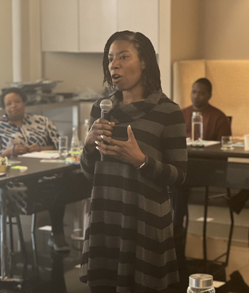

- Racism is the oppression of people due to the social construct of race backed by a system of racism that confers privilege and power on White people
- While structural racism is the foremost barrier to equity in the U.S., systems are comprised of individuals and therefore individuals must change to dismantle racism
- The ripples of antiracist change can positively impact entire communities
- The work of being antiracist has a beginning, it does not have an end
- While growth requires discomfort, it also requires care and dignity
- A deep understanding of intersecting identities is important in being antiracist
- The goal of antiracism is equity
Deitra Reiser, Ph.D.

Deitra Reiser is skilled at creating space for the exploration of race and racism. Using the lens of intersectionality, Dr. Reiser fosters greater understanding among individuals and within institutions, and supports their continued growth through antiracist thoughts and actions. Her focus is on driving the internal work necessary in order to achieve transformational and lasting change. Her 20 years of professional experience as a school psychologist and educator provides a foundation for individual and institutional change.
In addition to her experience as an educator and facilitator, Dr. Reiser has been engaged by numerous national organizations as a speaker on antiracism, race in the United States, and belonging in Jewish community. Previous clients include the Union for Reform Judaism, the Religious Action Center and Nick Cannon’s Class. Dr. Reiser is the author of a curriculum, Building Racial Stamina, that has been used to further the underlying principles of diversity, equity, and belonging in Jewish spaces.
Dr. Reiser is an alumna of Bend the Arc’s Selah Leadership Program and holds a doctorate in Educational Psychology from The University of Wisconsin-Madison.